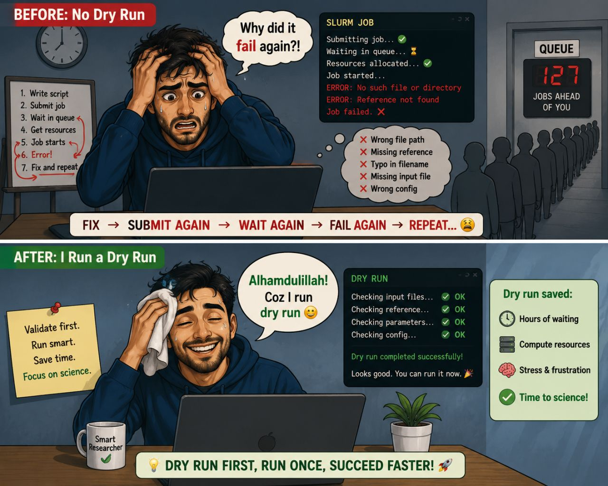

I used to submit a SLURM job, wait in the queue ⏳, finally get resources allocated... only to discover that my pipeline failed in the first few seconds.
Why?
Then I had to fix the mistake, submit another job, wait for resources again, and hope I didn't miss another typo. It was a frustrating cycle.
Then I discovered dry run mode.
A dry run validates your command and configuration without actually running the analysis. It checks whether the required files, directories, and parameters are available before consuming hours of compute time.
Think of it as pressing "Preview" before printing a 500-page document.
Many bioinformatics tools and workflow managers support a dry run option:
--dry)-preview or validation features)-n / --dry-run)Instead of learning about an error after waiting in the queue, you find out in seconds.
This small habit has saved me countless hours of waiting, resubmitting jobs, and debugging.
💡 Before launching your next long-running analysis, ask yourself: "Can I do a dry run first?"
Your future self — and your HPC cluster — will thank you.
View original on LinkedIn →